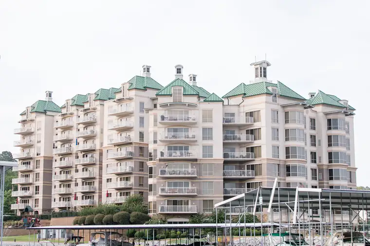
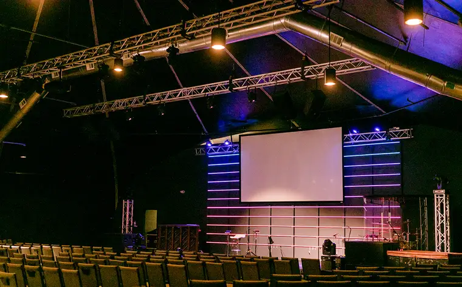
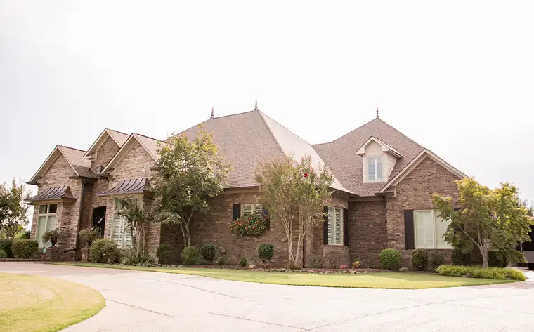
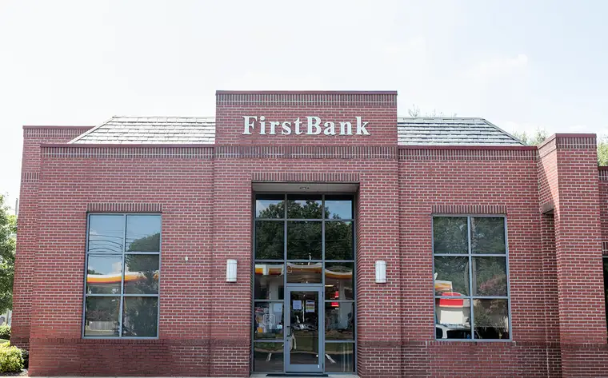

Our Roofing Services
At Elite Contractors, we are proud to be the premier destination for all your residential and commercial roofing needs in Jackson and beyond. Specializing in both residential and commercial roofing services, we have successfully completed projects for properties across Tennessee and the Southeastern United States.
As an unlimited licensed, bonded, and insured roofing contractor, Elite Contractors offers unparalleled expertise and service for both residential and commercial roofing projects. Our team, with over 60 years of combined experience, works closely with the top manufacturers in the industry to ensure the highest quality materials are used in every project from start to finish.
Commercial Roofing
Our commercial roofing services at Elite Contractors are dedicated to providing exceptional quality, durability, and professionalism for businesses and commercial properties. Our expert team of roofing professionals is equipped to handle a wide range of commercial roofing needs, from installation and maintenance to repair and replacement.
Commercial Membrane Roofing
A commercial membrane roof is a durable and versatile solution for protecting commercial properties from the elements. These membranes are designed to provide a waterproof barrier that protects the underlying structure from moisture, UV radiation, and other environmental factors. Commonly made from materials such as EPDM, TPO, PVC, or modified bitumen, commercial membrane roofing offers superior strength and longevity. Their flexibility and ease of installation make them an ideal choice for flat or low-slope roofs.
Hamilton Hills Shopping Center
Removal and replacement of 230,000 SF roof and roof decking system.
Project details
- Removal of multiple surfaced roofing systems
- Removal of insulation board
- Removal of rusted roof decking
- Installation of new roof decking
- Installation of new insulation board
- Installation of new Duro-Last 50 mil mechanically fastened white membrane roof
- 20 year labor & material warranty
MAT
450,000 SF removal and replacement of roof.
Project details
- 4 Phase Process
- Removal of ballasted (rocked) roofing system
- Installation of new Duro-Last 50 mil mechanically fastened white membrane roof
- Installation of expansion joints required for 4 phase process
Grand Harbor
Grand Harbor condominiums consist of one 6-story building and one and 8-story building. Crane service and management was required for the removal of metal mansard roof panels, roof replacement, and HVAC replacement.
Project details
- Removal of metal mansard roof panels
- Removal of Spray Foam Roof
- Removal and replacement of insulation board
- Installation of new Duro-Last 50 mil mechanically fastened white membrane roof
- 20 year labor & material warranty
Jackson State Community College
Liberty High School
Overlay of 130,00 SF of roofing.
Project details
- Disabled old TPO membrane
- Installed new high density recovery board
- Installed 60 mil mechanically attached TPO white membrane
- Removed and Replaced 2 large handicapped ramps
Commercial Silicone Roofing
Commercial silicone roofing is a popular and effective coating solution for enhancing the durability and longevity of commercial roofs. Applied as a liquid, silicone forms a seamless, waterproof membrane over existing roofing materials, providing superior protection against leaks, UV rays, and weather damage. Commercial silicone roofing is known for its flexibility, resistance to ponding water, and excellent weathering properties, making it an ideal choice for extending the lifespan of your commercial roof. With easy application and low maintenance requirements, commercial silicone roofing is a cost-effective option for improving the performance and sustainability of your commercial property’s roofing system.
Fellowship Bible Church
Caywood Elementary School
Premier Roofing Contractor in Tennessee
Elite Contractors is pleased to offer our customers the full Atlas line of roofing shingles and roofing
products on our residential projects:
We also use Atlas Roof Shingles on commercial properties!
Atlas Pro Plus Diamond Level Roofing Installer
Leading Provider of Atlas Roofing Materials
We also utilize the following Atlas Roofing products to deliver quality results you can trust:
Atlas Summit 180 Synthetic Underlayment
Atlas Summit 60 Synthetic Underlayment
Atlas Pro Cut Hip & Ridge Shingles
Using all three on your business or home provides the best shingle warranty in the industry, a 15-year labor warranty, and a limited lifetime warranty on material.
An ABC Supply Company
Elite Contractors proudly purchases shingles and roofing systems from ABC Supply Company, the nation’s largest roofing and vinyl siding wholesale distributor. We are committed to providing our customers with only the highest quality products made by the industry’s finest manufacturers!
We value quality & affordability﹣Learn more about financing options!
Your Options for Shingles
As the premier supplier of Atlas Roofing products, your property will receive Pinnacle® Pristine shingles and roofing products of the highest quality.
Need inspiration? Take a closer look at our past work and discover beautiful shingle colors for your home!
Pristine Pewter
Majestic Shake
Pristine Heather
Pristine Black
Coastal Granite
Copper Canyon
Morning Harvest
Summer Storm
Pristine Weathered Shadow
Pristine Weathered Wood
Pristine Desert
Pristine Green
Pristine Hearthstone
Pristine Hickory
Pristine Oyster
Pristine Pearl
Pristine Sienna
Pristine Sunset
Pristine Tan
See something you like? Tell us & let us create the same for you!
Hear what proud business owners & commercial clients have to say!
Financing Options for Your Peace of Mind.
Contact Us Today & Let’s Get Building!
Elite Contractors
Mailing Address
319 Vann Drive E9
Jackson, TN 38305
Jackson Office
110 Directors Row
Jackson, TN 38305
Phone:
731-300-3510
Get directions
Fax:
877-373-1944
Email: Info@elitecontractorsus.com
Business Hours
24/7
Office Hours
Monday - Saturday:
8:00 AM - 5:00 PM
Sunday: Closed
Jackson
write us a review
read our reviews
Follow
Home
About Us
Roofing
Commercial Renovation
Insurance Mitigation & Restoration
Testimonials
Gallery
Financing & FAQ
Contact Us
Site Map
© 2021 - 2026 Internet Marketing and SEO by NEXT Digital
Project photos



